西暦1920年頃の中国牌。
箱は、ごく普通の引き出し付き。
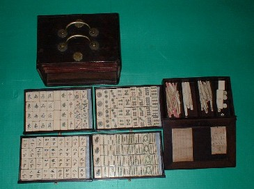
中身も、ごくノーマル。
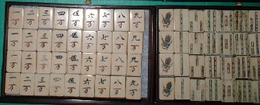
まぁどうと言うことはない牌であるが、この牌の特徴は花牌にある。
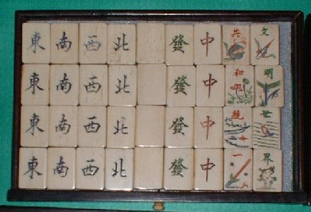
花牌の文字に「文明世界/共和統一」とある。この共和は、中華人民共和国の意味ではなく、Work with
Harmonyというような、ごく一般的な意味。
※この牌が作られた1920年頃、中華人民共和国は存在もしていない。
そこで文明世界・共和統一は、「国民が力を合わせて文明世界を築いて行こう」というほどの意味になる。そこでこの牌は、中国が古代国家体制から近代国家への移行期に作られた貴重な牌ということになる。
さて文明世界の対句（ついく）となれば、ここにある共和統一が文意としても順当であるが、中には文明世界・春夏秋冬という、なんだか前句と後句で意味が通じないような対句の花牌もある。
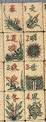
それでも文明世界・春夏秋冬なら、なんとか対句らしい雰囲気もある。しかし次の花牌となると、不可思議至極。
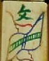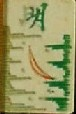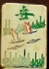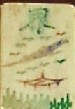
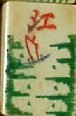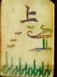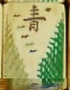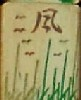
江上清風は、普通、山間明月と対句になっている。文意からいっても当然だ。しかし文明世界・江上清風となると、何が何だか意味不明....（揚子江の上に爽やかな風が吹いている文明世界(^-^；）
どうしてこのように前句と後句で関連の無い句が彫られたのかよくじぇんじぇん分からない。う〜ん、ひょっとしたら、共和統一では、「中華人民共和国が中国を統一」という意味に取れないこともないので、それを嫌ったのかもしんないなぁ。
|